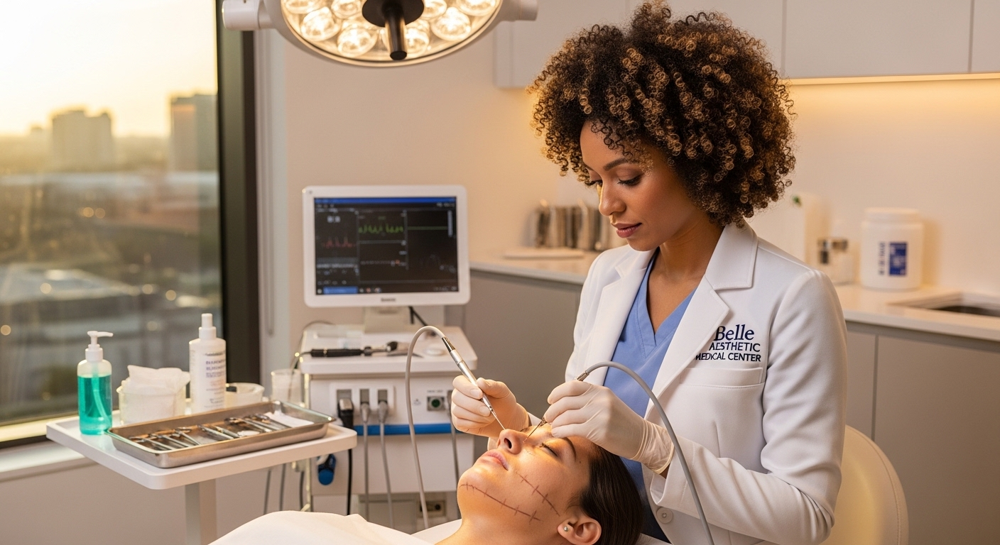

Endolifting: La Evolución de la Firmeza sin Quirófano
Redefiniendo el contorno facial con tecnología de vanguardia y mínimo impacto

El deseo de recuperar un contorno facial definido y combatir la flacidez severa solía tener una sola respuesta: el quirófano. Hoy, la ciencia médica nos ofrece una alternativa brillante, elegante y mínimamente invasiva: el Endolifting. Es la respuesta perfecta para quienes buscan resultados estructurales profundos sin los tiempos de recuperación o los riesgos de una cirugía tradicional.
La ciencia detrás del efecto "Lifting"
El Endolifting utiliza una microfibra óptica, delgada como un cabello, que se introduce de manera subcutánea (debajo de la piel). A través de esta fibra, se emite una energía láser de diodo específica que cumple dos funciones magistrales: primero, disuelve las pequeñas acumulaciones de grasa localizada (como en la papada o la línea mandibular); segundo, provoca una retracción inmediata de la piel y estimula profundamente el colágeno.

El resultado es un tensado cutáneo visible y duradero, que redefine el óvalo facial de forma armoniosa. Realizar un Endolifting requiere no solo de la mejor tecnología, sino de un conocimiento anatómico profundo y un agudo sentido de la estética.
Ética, precisión y calidez humana
En Belle Medical Center, abordamos este procedimiento con absoluta responsabilidad médica y un profundo sentido ético. Evaluamos tu caso con honestidad, te explicamos cada detalle con transparencia y te cuidamos durante todo el proceso, porque queremos que te sientas seguro y feliz con tu decisión de invertir en ti mismo.